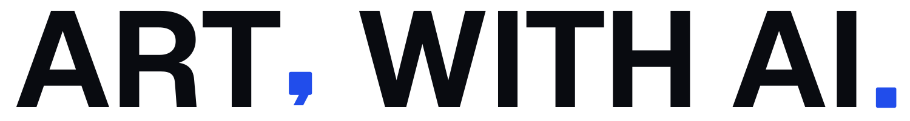
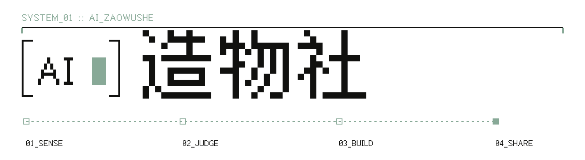

FREE / 01永久免费
4STEP
METHOD
METHOD
个人网站公开课
灵感迁移方法
四步方法、六层结构、公开案例和基础 Prompt。先做出第一版，再决定要不要买。
¥0开始学习 ↗


PERSONAL WEBSITE METHOD · ORIGINAL PROMPTS · MOTION SKILL
第一层免费教你从参考、拆解到发布。第二层提供重新组合并验证过的原创 Prompt。第三层把动效设计师的判断做成可交给 Agent 的 Skill，并逐案校准。
FIELD NOTE 001 · 核验日期 2026.08.22
FREE METHOD / LAYER 01
免费层不只给你网站链接，而是教会一条可以重复使用的迁移路径。你可以直接照着做完第一个个人网站。
最多选 3 个网站，每个只保留一个真正有效的机制。
OUTPUT / 参考清单分开目标、内容、视觉、动效、工程和验收，不把皮肤当方法。
OUTPUT / 六层拆解替换成你的受众、作品、证据、品牌语气与真实技术条件。
OUTPUT / 迁移 Brief生成、修改并在桌面和手机验收，让结果真的可以打开和联系你。
OUTPUT / 已发布网站免费拿：站内公开教学 Prompt、组件练习、案例拆解和工具地图都可以直接使用。
进入免费 Prompt 库 ↘LEARN · TAKE · BUY
公开层负责教会方法；付费层交付完整生成规格、变量和验收；动效层交付可安装的 Agent Skill，并保留逐案校准。
个人网站公开课
四步方法、六层结构、公开案例和基础 Prompt。先做出第一版，再决定要不要买。
原创 Prompt 商品
完整主 Prompt、变量采集表、三种网站方向、四个修正 Prompt 和桌面 / 手机验收表。
动效设计师能力
Agent 先看真实页面，再选一个标志性动效，完成方向、实现、移动端、减弱动效与性能验收。
Case-by-case 服务
针对一个真实页面，由动效设计师校准标志性时刻、动效地图和实现优先级。Skill 不替代这一步判断。
公开：方法和小样。付费：完整 Prompt / Skill 与验收。私有：参考评分、失败样本、组合矩阵和逐案判断，不作为商品直接公开。
REFERENCE INPUTS
按整站、组件和设计系统标出用途。公开 Prompt 可以学习，但商品必须经过来源记录、六层拆解、变量替换、重新组合和真实验收。
没有匹配的网站，试试换一个关键词。
可以学习公开 Prompt 的规格方法；不能把别人的付费库、品牌资产、动效序列或整站作品改名出售。本站商品只交付重新定义并验证过的原创系统。
WHY
很多 Vibe Coding 教程停在“生成一个很酷的页面”。VIBE FRONTIER 把学习继续往下推：找到机制，拆出组件，建立设计语言，选择合适的动效层级，并在移动端、无障碍和性能约束下完成验收。
LEARNING PATHS
建议顺序：组件 → 系统 → 动效 → Vibe 工作流。每一条都以“可交付的产出”结束。
COMPONENT WORKSHOP
组件不是一张静态截图。调节尺寸、语气和状态，观察视觉规则如何跟着变化。
尺寸来自空间刻度，颜色来自语义 Token，不在组件里写随机值。
Default、Hover、Focus、Loading、Disabled 都要被单独设计与测试。
键盘可达、焦点可见、文案不抖动、移动端触控目标不小于 44px。
SYSTEM BLUEPRINT
它是一条从原始视觉值到产品决策，再到代码与验收的可追踪链路。
盘点真实界面与重复问题
颜色、字号、间距、圆角
把数值改写成用途与语气
行为、状态、组合与边界
示例、禁用方式与自动测试
如果一个规则不能解释“何时用、何时不用、怎么验收”，它还不是系统。
CURATED TOOL MAP
只收录官方入口。每个资源都有适用场景、使用判断与边界说明。
没有匹配的工具，试试更宽的关键词。
PROMPT LIBRARY
原创教学模板负责讲方法；你已保存的 MotionSites 免费样例负责展示一份完整生成规格可以细到什么程度。
这里只展示它们为什么完整，不再把原文当作本站商品。来源、品牌和内容仍属于原作者；本站付费内容从新的任务和变量重新生成。
CASE LAB
这 3 个案例已有作者、原作、实现和证据边界。它们不是临摹素材，而是把机制迁移到自己项目的练习。
FULL REFERENCE INDEX
按标题、作者、平台和机制搜索。点「加入候选」会保存在当前浏览器，方便你逐个筛。
没有匹配的候选，换一个分类或关键词试试。
BUILD IN PUBLIC
这里也会逐步融合 AI 造物社的共学内容：真实项目诊断、组件共建、动效实验与公开复盘。先从提出一个具体问题开始。
不接收“帮我做得高级一点”这类空泛需求；请带上链接、目标用户、当前问题与限制条件。